Books I would recommend to a friend
“Friends often ask which books shaped me. These are the ones I keep going back to. Take what speaks to you, leave the rest.”
Marc Duboc (@promaa), Seoul. Reading guide (PDF)
Foundational Pillars & Liberty
-
Man’s Search for Meaning
Frankl survived Auschwitz and distilled the most liberating psychological truth ever written: you cannot always control your circumstances, but you always have absolute sovereignty over your attitude. Read when feeling adrift; trivial anxieties evaporate.
Best for: When feeling overwhelmed or losing your sense of purpose.
Finding a “why” that outlasts any collapse of the “how.”
-
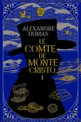
The Count of Monte Cristo
The greatest adventure in literature, but really a masterclass in composure, patience, and playing the 20-year game. Edmond Dantès never panics; he calculates, accumulates leverage, and masters time.
“All human wisdom is contained in these two words: Wait and hope.”
-
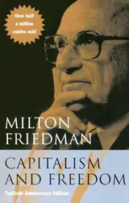
Capitalism and Freedom
Friedman cuts through bureaucratic rhetoric with razor clarity. Even without agreeing with every market conclusion, it forces you to question why we surrender so much daily autonomy to administrative inertia.
Economic freedom and personal autonomy are fundamentally inseparable.
-
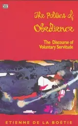
Discourse on Voluntary Servitude
Written by an 18-year-old in the 16th century, and still fresher than almost any modern commentary. His core insight is devastating: tyrants only hold power because the governed consent to obey them.
A short, electrifying shock to the system against passive compliance.
-
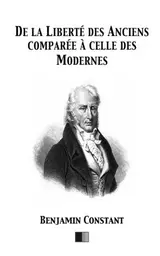
On the Liberty of the Ancients compared with that of the Moderns
Constant drew a brilliant distinction: ancient freedom was constant political mobilization; modern freedom is the sacred right to be left in peace to pursue your craft, family, and ideas without interference.
The foundational case for private sanctuary over permanent political noise.
Systems, Power & Technology
-
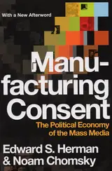
Manufacturing Consent
Breaks down the 5 structural filters through which mass media selects, frames, and purifies information. A diagnostic toolkit so you never consume news passively again.
Your personal mental firewall against manufactured consensus.
-
Permanent Record
Beyond NSA disclosures, this is about treating technology with ethical seriousness. Convenience is a trap: if you don’t maintain your tools, your tools will control you.
Treat your machines and privacy with the rigor of a craftsman.
-
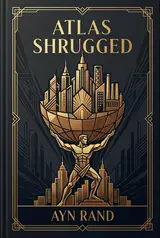
Atlas Shrugged
A monumental philosophical novel defending the primacy of reason, productive individual agency, and the creator’s mind against bureaucratic collectivism and coerced guilt.
The mind is the prime mover of human progress; never sacrifice your agency to unearned guilt.
-
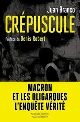
Crépuscule
Whatever one thinks of Branco’s polemical tone, the structural breakdown of Parisian oligarchic networks and revolving doors is documented with surgical precision.
Best for: Inspecting the revolving doors and inner circles of French power.
A candid look inside the closed circles and machinery of French power.
-
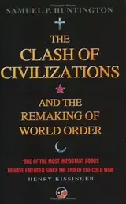
The Clash of Civilizations
Predicted that post-Cold War conflicts would run along civilizational and cultural fault lines. An indispensable macro-lens to decode modern international flashpoints.
A pragmatic compass for navigating global geopolitical fractures.
-
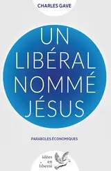
A Liberal Named Jesus
An unorthodox, punchy read re-examining the Gospels through the lens of individual agency, capital allocation, and productive risk as moral duties.
A refreshing perspective on risk-taking, stewardship, and accountability.
Solitude, Discipline & Craft
-
A Philosophy of Solitude
Practical rituals for cultivating an unshakeable inner fortress: elemental pauses, walking alone, observing wind and stone. Solitude here is the deliberate cultivation of one's own mind.
Best for: Sinking into sensory calm during hyper-connected burnout.
The antidote to hyper-connected overstimulation and mental burnout.
-
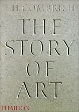
The Story of Art
The antithesis of pretentious art theory. Gombrich writes like an attentive, wise friend strolling through an empty gallery, explaining how humanity learned to see light and perspective.
The single best companion book before visiting any museum in the world.
-
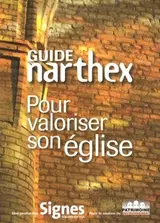
Vertigo of Dependence
A lucid reflection on the illusions of absolute self-sufficiency. Acknowledging our vulnerabilities and chosen bonds is the true starting point of emotional maturity.
A quiet mirror reminding us that true strength lies in accepting limits.
Great Narratives & The Human Condition
-
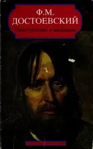
Crime and Punishment
Inside Raskolnikov’s feverish brain as intellectual arrogance disintegrates against the crushing weight of human conscience. Unbearably tense and utterly profound.
The greatest warning against elevating abstract ideology over human reality.
-
The Brothers Karamazov
Dmitri (passion), Ivan (intellect), Alyosha (faith). Every fundamental conflict of human nature is played out in this family. The 'Grand Inquisitor' chapter alone is legendary.
The absolute pinnacle of psychological and philosophical literature.
-
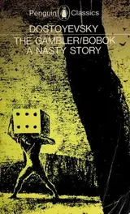
The Gambler
Written in just 26 days to pay off roulette debts, this short novel is a frantic dissection of how obsession and the illusion of control trap even sharp minds.
Fast, sharp, and brutally observant of the psychology of compulsive hope.
-
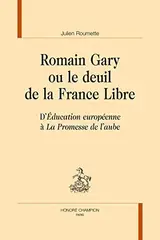
Promise at Dawn
Gary’s tribute to his mother’s boundless, irrational faith in him. It oscillates between laugh-out-loud humor and overwhelming emotional power.
Best for: Rekindling fierce filial love, courage, and literary panache.
The kind of book that makes you put it down and call your mother immediately.
-
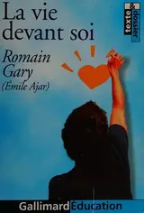
The Life Before Us
Narrated by young Momo veiling over Madame Rosa in Belleville. It has more genuine warmth, human solidarity, and streetwise wisdom in 200 pages than entire literary eras.
A masterclass in humor, tenderness, and finding beauty in the margins.
-
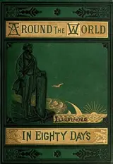
Around the World in Eighty Days
Read before hiking the GR20. Phileas Fogg’s mathematical composure and Passepartout’s loyalty make it the ultimate comfort read on resourcefulness and perseverance.
Pure Victorian rhythm, calm under pressure, and the joy of problem-solving.
-
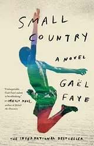
Small Country
A luminous, heartbreaking story of childhood in Burundi shattered by war. Faye demonstrates how literature, music, and nature serve as the last shields of human dignity.
A poetic testament to memory and resilience in times of upheaval.